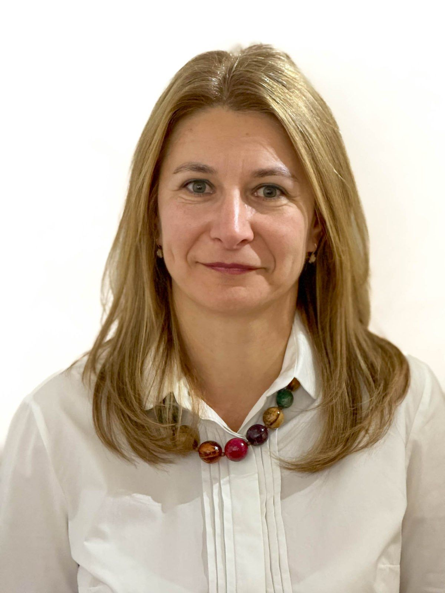
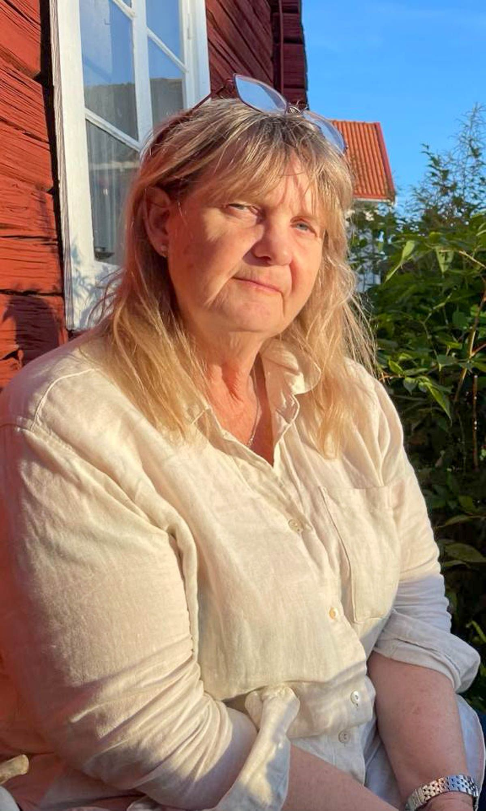
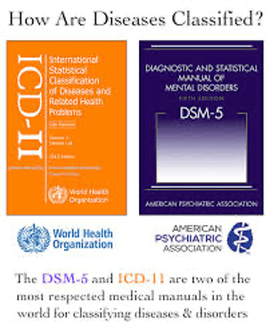
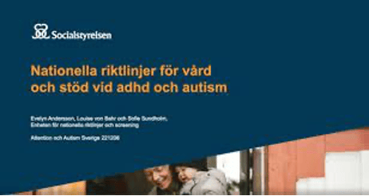

Om Oss
På mottagningen arbetar barn- och ungdomspsykiater Adriana Manea och leg. psykolog/leg. psykoterapeut Mona Pettersson. Vi har arbetat tillsammans under många år och vårt fokus har varit att utföra neuropsykiatriska utredningar samt psykiatriska behandlingar. Vi har hjälpt många personer/ klienter och deras familj att hitta vägar till ett bättre mående och funktion.
Vårt mål är att vara följsamma utifrån barnens och ungdomarnas utveckling, att se dem utifrån deras förutsättningar och bidra med verktyg för att bygga en hälsosam och meningsfull framtid. I kontakten med vuxna har vi som syfte att identifiera de hinder som stör funktionen i vardagen, på arbetet och i relationer samt guida dem att hitta vägen till ett mer fungerande liv.

Adriana Manea
Jag är läkare, specialiserad i Barn och ungdomspsykiatri sedan 2008. Jag har arbetat på barn- och ungdomspsykiatri (BUP) i Gävle som överläkare sedan 2011. Jag har också arbetat privat i Region Dalarna sedan 2018 och har haft korta uppdrag i Stockholm, Västerås, Örebro. Jag har bred erfarenhet av neuropsykiatriska utredningar, barnpsykiatrisk bedömning samt psykiatrisk medicinsk behandling för barn i alla åldrar samt unga vuxna. Det glädjer mig att bredda min erfarenhet genom att erbjuda utredning, bedömning och medicinsk behandling även till vuxna. Jag arbetar fortsatt deltid på BUP i Gävle för att bibehålla min kompetens på en nivå som ger goda förutsättningar för att bedriva ett gediget arbete.
Min filosofi
”Psykiatriska tillstånd” definierar jag som en tillfällig variation i vårt psyke som gör att vi inte fungerar som vi brukar och inte känner igen oss själva. Variationen kan förstås genom olika förklaringsmodeller. Ibland orsakas den av stress som samhället och livet påtvingar våra hjärnor, andra gånger kan det finnas genetiska orsaker och oftast finns en kombination av flera olika faktorer. Man behöver förstå sina sårbarheter och styrkor för att kunna hitta den balans som leder till psykisk hälsa. I vår kontakt strävar vi mot att hitta vägen till balans.
I mitt privata liv tycker jag om att vara med familjen, att läsa, att utmana mig i att lära mig helt nya saker och jag älskar att vara i naturen. Jag hittar inspiration i naturens skiftningar vilket har bidragit till att se hur viktigt och vackert det är att vi människor är olik varandra men också hur viktigt det är att ha anpassade förutsättningar för att kunna växa och blomma tillsammans.

Mona Pettersson
Under mina 18 år som psykolog och legitimerad psykoterapeut så har jag arbetat med barn, ungdomar och vuxna i flera olika sammanhang, både inom primärvården, psykiatrin och i mitt företag ”KBT i Dalarna”. Jag har främst arbetat i Region Gävleborg och Region Dalarna och utfört neuropsykiatriska utredningar (NP-utredningar) parallellt med psykoterapier. Utifrån mitt perspektiv är inte diagnosen det viktigaste under utredandeprocessen utan det är att på djupet förstå sig själv och kunna se sina förmågor och vad det är som gör att man har hinder att använda sig av dessa. Ibland beror det på en diagnos och ibland kan det vara andra typer av hinder och då behövs andra typer av insatser. För mig är det också viktigt att personer som står nära, tex anhöriga förstår vad hindren består av, för att kunna skilja på när man inte vill respektive, när man inte kan. Då blir det lättare att stötta och hitta konstruktiva lösningar.
Vilka fördelar finns det med att välja en liten mottagning?
På vår mottagning har vi en total överblick och kan erbjuda en snabb och trygg kontakt, bredare bedömningar samt kontinuitet. Tillsammans letar vi efter ledtrådar och information för att förstå problematiken i grunden. Vi bidrar med kunskap, öppenhet, trygghet och att lyssna och reflektera tillsammans.
Varje individ möts på sina premisser och utredningen kan ibland gå fort och ibland ta längre tid. Det kan också vara så att man efter en tid behöver få ses igen och påminnas om vad vi kommit fram till eller få stöd i att hitta hjälp framåt så då det har tillkommit nya omständigheter. Vi kan följa upp över tid eller remittera vidare.
Vi arbetar utifrån Socialstyrelsen-, Svenska föreningen för barn- och ungdomspsykiatri- (SFBUP), Svenska psykiatriska föreningens (SPF) riktlinjer. Vi utbildar oss kontinuerligt för att hålla oss uppdaterade vilket är viktigt för att kunna erbjuda rätt insatser. Vårt mål är att kunna erbjuda ett snabbt och professionellt mottagande till alla. Hos oss har du en kontaktperson som hjälper och vägleder dig genom hela processen.


Detta kan vi erbjuda
Vi erbjuder en privatfinansierad utredning samt medicinsk behandling, detta innebär att det är du som bekostar den själv.
Vi erbjuder ett första familjesamtal där vi gör en fördjupad intervju för att tillsammans komma fram till om det finns behov av utredning eller andra insatser. Om andra insatser skulle behövas kan familjen guidas vidare.
Vid beslut om att inleda en utredning eller behandling erbjuds en vårdplan med information om vad vår kontakt kommer att innebära samt kostnaden för detta.
Vi erbjuder ”second opinion” bedömningar för de som inte längre känner igen sig i sin diagnos och heller inte har en funktionsnedsättning utifrån sina tidigare svårigheter.
Sammanfattningsvis kan vi erbjuda
- Familjesamtal med fördjupad intervju och screening
- Läkarbedömning
- Endast psykologutredning
- Neuropsykiatrisk utredning av psykolog och läkare
- Second opinion angående diagnostik
- Medicinsk behandling vid ADHD/ADD
- Medicinsk behandling av depression, ångest, mfl. tillstånd
- Intyg (Omvårdnadsbidrag, Transportstyrelsen, VAB kopplat till psykisk ohälsa, Intyg gällande centralstimulerande mediciner vid utlandsresor)